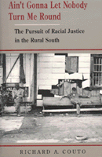

<body bgcolor="#FFFFFF" text="#000000" link="#0000FF" vlink="#CC0000" alink="#CC0000"><center><hr width="350" size="1" align="center" noshade>An examination of individuals who enacted change in the status, opportunities, and treatment of African Americans in the rural South<hr width="350" size="1" align="center" noshade><p><a href="https://cdcshoppingcart.uchicago.edu/Cart/ChicagoBook.aspx?ISBN=9780877228066&&PRESS=temple" target="_top">Buy this book!</a> | <a href="https://cdcshoppingcart.uchicago.edu/Cart/Cart.aspx?PRESS=temple" target="_top">View Cart</a> | <a href="https://cdcshoppingcart.uchicago.edu/Cart/Cart.aspx?PRESS=temple" target="_top">Check Out</a></p><p></p></center><!--none//--><h1>Ain't Gonna Let Nobody Turn Me Round</h1>
<H2>The Pursuit of Racial Justice in the Rural South</H2>
<h3>Richard A. Couto</h3>
<P>cloth 0-87722-806-X $69.50, Jun 91, <FONT COLOR=#990033>Out of Stock Unavailable</FONT>
<br>paper 1-56639-004-4 $27.95, Aug 92, <FONT COLOR=#990033>Out of Stock Unavailable</FONT>
<BR> 440 pp
6x9
34&nbsp;halftones
</P><BLOCKQUOTE><I>"Through an adroit interweaving of oral history accounts from each of the counties...Couto shows the impact of New Deal measures in the 1930s and '40s; the Civil Rights Movements of the 1950s and '60s; and the creation of federally funded cooperative health clinics in the 1970 and '80s."</I>
<br>&#151<b><I>Choice</I></b><I></I></BLOCKQUOTE>
<p>Combining oral history and "political archeology," Richard A. Couto grounds the African American struggle for justice in the lives of ordinary people making extraordinary progress on issues such as land ownership, education, voting, work, and health care in the face of violent repression. Focusing especially on federally-funded community health centers, he closely examines four rural Southern communities: Haywood County, Tennessee; Lee County, Arkansas; Lowndes County, Alabama; and Sea Islands, South Carolina.
<p>Through the voices of local leaders, organizers, and activists, the author sensitively depicts efforts to reverse the economic, social, and political deprivation of African Americans in these areas. In their fight for human dignity and equality, these residents established health care centers, registered voters, and improved educational opportunities, relying not only on federal funding but often on personal sacrifice. To place these contemporary narratives in the century-long succession of efforts to redress racial prejudice, Couto selects material from the Civil War to the present for the purpose of illuminating recent events in these areas. He also examines the effects of retracted funding by the Reagan administration.
<BR>&nbsp;<h2>Reviews</h2>
<p><I>"Couto introduces us to unknown and unsung heroes who register voters, establish health care centers, improve education, and locate jobs, hacking away at the vines to get closer to the roots of discrimination, poverty, ignorance, and sickness.... Couto has been one of the heroes himself."</I>
<br>&#151<b><I>Southern Seen</I></b>
<p><I>"A fascinating study which masterfully weaves together the ways in which communities helped shape and responded to federal policy initiatives to secure racial justice and equality.... It promotes a more comprehensive analysis of the origins of the civil rights movement, its process, and outcome."</I>
<br>&#151<b>Patricia Sullivan</b>, Carter G. Woodson Institute, University of Virginia
<p><I>"[The themes of this book] are a rich part of the history of the region and the country that we just don't have. You won't find them written in any history book you'll ever come across. Again and again, I was struck by historical references...many, many of them very meaningful and touching."</I>
<br>&#151<b>John Seigenthaler</b>, <I>The</I> [Nashville] <I>Tennessean</I>
<BR>&nbsp;<h2>Contents</h2><P>
<p>Acknowledgments
<br>Introduction
<p><b>Part I: The Pursuit of Justice</b>
<br>1. We Lost the Idea of Being Afraid: Haywood County, Tennessee
<br>2. The Value of Improved Self-Worth: Lee County, Arkansas
<br>3. The Time for Waiting Had Been Used Up: Lowndes County, Alabama
<br>4. The People Are Trying to Do Something: Sea Islands, South Carolina
<p><b>Part II: The Elusion of Emancipation</b>
<br>5. Economics: Land Reform and Landless Farmers
<br>6. Education: Instruction and Incrementalism
<br>7. Politics: Civil Wrongs and Civil Rights
<br>8. Health: Contexts and Cures
<p><b>Part III: The Politics of Hope</b>
<br>9. Process: Sources of Reform
<br>10. Process: Race, Leadership, and Change
<p>Conclusion
<br>Notes
<br>Interviews
<br>Index
</P><BR>&nbsp;<H2>About the Author(s)</H2>
<P><b>Richard A. Couto</b> is a Professor in the Jepson School of Leadership Studies at the University of Richmond.</P>
<BR><H2>Subject Categories</H2>
<p><A HREF="/tempress/african.html" TARGET="_top">African American Studies</a>
<BR>
<BR><A HREF="/tempress/law.html" TARGET="_top">Law and Criminology</a>
</p>
<p align="center"><a href="https://cdcshoppingcart.uchicago.edu/Cart/ChicagoBook.aspx?ISBN=9780877228066&&PRESS=temple" target="_top">Buy this book!</a> | <a href="https://cdcshoppingcart.uchicago.edu/Cart/Cart.aspx?PRESS=temple" target="_top">View Cart</a> | <a href="https://cdcshoppingcart.uchicago.edu/Cart/Cart.aspx?PRESS=temple" target="_top">Check Out</a></p><p><font face="Arial" size="1"><a href="copyright.html" onMouseOver="window.status='Web Copyright Policy';return true;" onMouseOut="window.status=''" title="Web Copyright Policy">&copy;</a> 2015 <a href="http://www.temple.edu" target="new" onMouseOver="window.status='Link to Temple University home page';return true;" onMouseOut="window.status=''" title="Link to Temple University home page">Temple University</a>. All Rights Reserved. http://www.temple.edu/tempress/titles/727_reg.html</font></p>